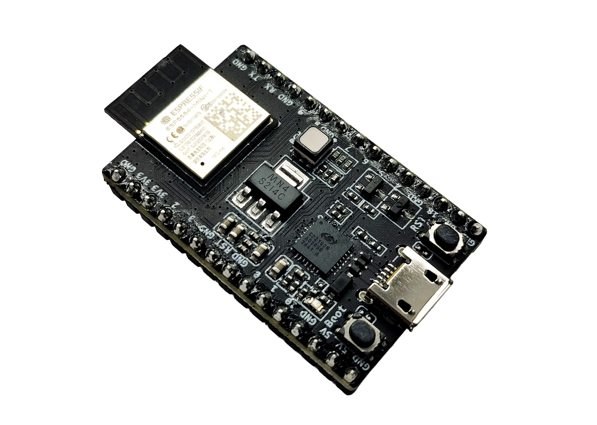
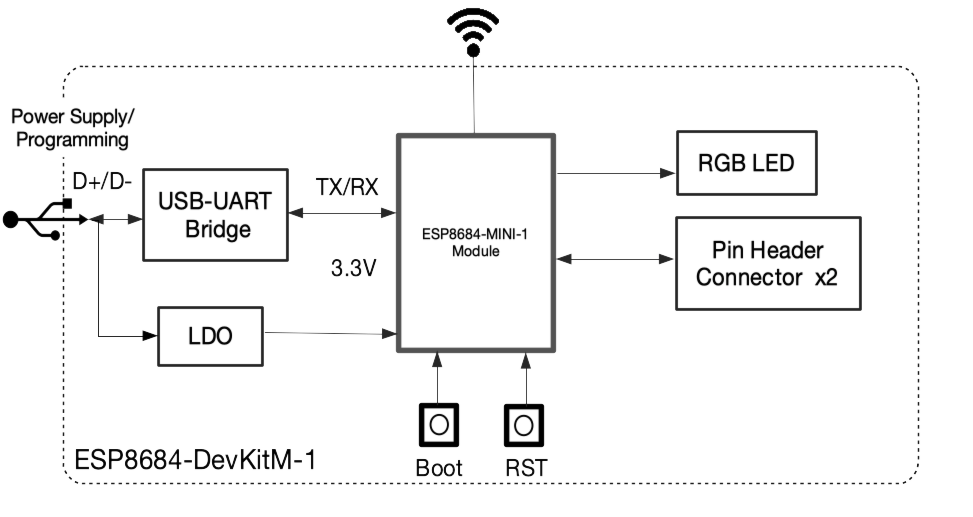
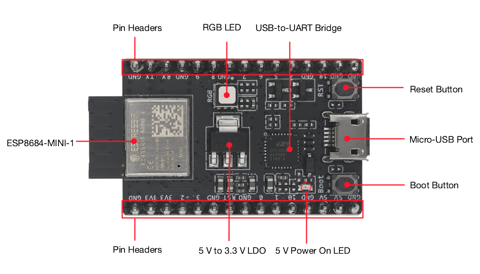
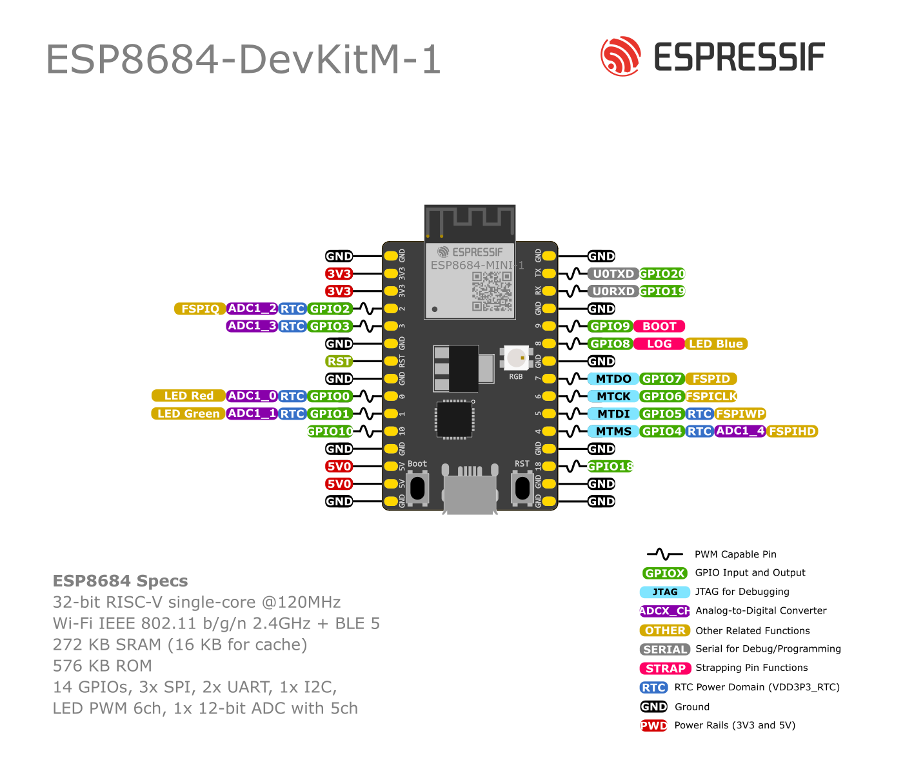

ESP8684-DevKitM-1
ESP8684-DevKitM-1 is an entry-level development board based on ESP8684-MINI-1, a general-purpose module with 1 MB/2 MB/4 MB SPI flash. The module uses the ESP32-C2 SoC and integrates Wi-Fi and Bluetooth LE. You can find the board schematic here and the vendor user guide here.
Most of the I/O pins are broken out to the pin headers on both sides for easy interfacing. Developers can either connect peripherals with jumper wires or mount ESP8684-DevKitM-1 on a breadboard.
Toolchain, flashing and the serial console are described in the ESP32-C2 chip documentation.

ESP8684-DevKitM-1 with ESP8684-MINI-1 module
The block diagram below presents the main components of the ESP8684-DevKitM-1.

ESP8684-DevKitM-1 Electrical Block Diagram
Hardware Components

ESP8684-DevKitM-1 Hardware Components
Key Component |
Description |
|---|---|
ESP8684-MINI-1 |
Wi-Fi and Bluetooth LE module with PCB antenna and on-board SPI flash (1 MB/2 MB/4 MB). Typical XTAL is 26 MHz. |
5 V to 3.3 V LDO |
Converts USB or 5 V header power to 3.3 V. |
5 V Power On LED |
Turns on when USB power is connected. |
Pin Headers |
All available GPIO pins broken out on J1 and J3. |
Boot Button |
Download button. Hold Boot and press Reset to enter Firmware Download mode. |
Micro-USB Port |
Power supply and USB-to-UART communication. |
Reset Button |
Restarts the system (connected to CHIP_EN). |
USB-to-UART Bridge |
Single USB-to-UART bridge, up to 3 Mbps. |
RGB LED |
On v1.1: discrete RGB LED on GPIO0 (R), GPIO1 (G) and GPIO8 (B). On v1.0: addressable RGB LED on GPIO8 only. |
This board has no USB-Serial-JTAG port on the SoC. Console and flashing use the on-board USB-to-UART bridge.
Board LEDs
There is one on-board LED that indicates the presence of USB power.
The RGB LED mapping depends on the hardware revision:
v1.1 (current): discrete RGB LED driven by GPIO0 (red), GPIO1 (green) and GPIO8 (blue). This is the mapping used by NuttX (
LED_RED,LED_GREENandLED_BLUEinboard.h).v1.0: addressable RGB LED driven only by GPIO8.
Both revisions are available on the market. See Hardware Revision Details. GPIO8 and GPIO9 are also strapping pins of the ESP8684 chip.
Power Supply
There are three mutually exclusive ways to provide power to the board:
Micro-USB port (default, recommended)
5V and G (GND) pins
3V3 and G (GND) pins
Use a USB 2.0 cable (Standard-A to Micro-B) that carries data lines. Charge-only cables will not enumerate the USB-to-UART bridge and cannot be used to flash the board.
Pin Mapping

ESP8684-DevKitM-1 Pin Layout
Default NuttX pin assignments for this board:
ESP8684 Pin |
Signal |
Notes |
|---|---|---|
GPIO20 |
U0TXD |
UART0 TX (serial console) |
GPIO19 |
U0RXD |
UART0 RX (serial console) |
GPIO9 |
BOOT |
Strapping pin; user button after reset |
GPIO0 |
LED Red |
RGB LED (v1.1); ADC1_CH0 |
GPIO1 |
LED Green |
RGB LED (v1.1); ADC1_CH1 |
GPIO8 |
LED Blue |
RGB LED (v1.1) / WS2812 (v1.0); strapping |
GPIO6 |
I2C0 SCL |
Default I2C clock |
GPIO5 |
I2C0 SDA |
Default I2C data; ADC2_CH0 |
GPIO7 |
SPI2 MOSI |
Default SPI2 MOSI (FSPID) |
GPIO2 |
SPI2 MISO |
Default SPI2 MISO (FSPIQ); LEDC PWM ch0 |
GPIO10 |
SPI2 CS |
Default SPI2 chip select |
GPIO6 |
SPI2 CLK |
Default SPI2 clock (shared with I2C SCL) |
J1
Pin |
Signal |
Notes |
|---|---|---|
1 |
G |
Ground |
2 |
3V3 |
3.3 V power supply |
3 |
3V3 |
3.3 V power supply |
4 |
GPIO2 |
ADC1_CH2, FSPIQ |
5 |
GPIO3 |
ADC1_CH3 |
6 |
G |
Ground |
7 |
RST |
CHIP_EN; High: enable; Low: power off |
8 |
G |
Ground |
9 |
GPIO0 |
ADC1_CH0, LED Red (v1.1) |
10 |
GPIO1 |
ADC1_CH1, LED Green (v1.1) |
11 |
GPIO10 |
FSPICS0 |
12 |
G |
Ground |
13 |
5V |
5 V power supply |
14 |
5V |
5 V power supply |
15 |
G |
Ground |
J3
Pin |
Signal |
Notes |
|---|---|---|
1 |
G |
Ground |
2 |
TX |
GPIO20, U0TXD |
3 |
RX |
GPIO19, U0RXD |
4 |
G |
Ground |
5 |
GPIO9 |
Strapping pin, BOOT button |
6 |
GPIO8 |
Strapping pin, LED Blue (v1.1) |
7 |
G |
Ground |
8 |
GPIO7 |
FSPID, MTDO |
9 |
GPIO6 |
FSPICLK, MTCK |
10 |
GPIO5 |
ADC2_CH0, FSPIWP, MTDI |
11 |
GPIO4 |
ADC1_CH4, FSPIHD, MTMS |
12 |
G |
Ground |
13 |
GPIO18 |
|
14 |
G |
Ground |
15 |
G |
Ground |
GPIO8 and GPIO9 are strapping pins. Their level at reset selects boot and download mode. See the ESP8684 Datasheet section Strapping Pins.
Configurations
All of the configurations presented below can be tested by running the following commands:
$ ./tools/configure.sh esp8684-devkitm:<config_name>
$ make flash ESPTOOL_PORT=/dev/ttyUSB0 -j
Where <config_name> is the name of board configuration you want to use,
i.e.: nsh, buttons, wifi…
Then use a serial console terminal like picocom configured to 115200 8N1.
adc
The adc configuration enables the ADC driver and the ADC example application.
ADC Unit 1 is registered to /dev/adc0 with channels 0, 1, 2 and 3 enabled by default.
Currently, the ADC operates in oneshot mode.
More ADC channels can be enabled or disabled in ADC Configuration menu.
This example shows channels 0 and 1 connected to 3.3 V and channels 2 and 3 to GND (all readings show in units of mV):
nsh> adc -n 1
adc_main: g_adcstate.count: 1
adc_main: Hardware initialized. Opening the ADC device: /dev/adc0
Sample:
1: channel: 0 value: 2900
2: channel: 1 value: 2900
3: channel: 2 value: 0
4: channel: 3 value: 0
ble
This configuration is used to enable the Bluetooth Low Energy (BLE) of the ESP32-C2 chip.
To test it, just run the following commands below.
Confirm that bnep interface exist:
nsh> ifconfig
bnep0 Link encap:UNSPEC at DOWN
inet addr:0.0.0.0 DRaddr:0.0.0.0 Mask:0.0.0.0
Get basic information from it:
nsh> bt bnep0 info
Device: bnep0
BDAddr: 86:f7:03:09:41:4d
Flags: 0000
Free: 20
ACL: 20
SCO: 0
Max:
ACL: 24
SCO: 0
MTU:
ACL: 70
SCO: 0
Policy: 0
Type: 0
Start the scanning process:
nsh> bt bnep0 scan start
Wait a little bit before stopping it.
Then after some minutes stop it:
nsh> bt bnep0 scan stop
Get the list of BLE devices found around you:
nsh> bt bnep0 scan get
Scan result:
1. addr: d7:c4:e6:xx:xx:xx type: 0
rssi: -62
response type: 4
advertiser data: 10 09 4d 69 20 XX XX XX XX XX XX XX XX XX XX 20 e
nsh>
bmp180
This configuration enables the use of the BMP180 pressure sensor over I2C.
You can check that the sensor is working by using the bmp180 application:
nsh> bmp180
Pressure value = 91531
Pressure value = 91526
Pressure value = 91525
crypto
This configuration enables support for the cryptographic hardware and
the /dev/crypto device file. Currently, we are supporting SHA-1,
and SHA-256 algorithms using hardware.
To test hardware acceleration, you can use hmac example and following output
should look like this:
nsh> hmac
...
hmac sha1 success
hmac sha1 success
hmac sha1 success
hmac sha256 success
hmac sha256 success
hmac sha256 success
efuse
This configuration demonstrates the use of the eFuse driver. It can be accessed
through the /dev/efuse device file.
Virtual eFuse mode can be used by enabling CONFIG_ESPRESSIF_EFUSE_VIRTUAL
option to prevent possible damages on chip.
The following snippet demonstrates how to read MAC address:
int fd;
int ret;
uint8_t mac[6];
struct efuse_param_s param;
struct efuse_desc_s mac_addr =
{
.bit_offset = 1,
.bit_count = 48
};
const efuse_desc_t* desc[] =
{
&mac_addr,
NULL
};
param.field = desc;
param.size = 48;
param.data = mac;
fd = open("/dev/efuse", O_RDONLY);
ret = ioctl(fd, EFUSEIOC_READ_FIELD, ¶m);
To find offset and count variables for related eFuse, please refer to Espressif’s Technical Reference Manuals.
gpio
This is a test for the GPIO driver. It uses GPIO1 and GPIO2 as outputs and GPIO9 as an interrupt pin.
At the nsh, we can turn the outputs on and off with the following:
nsh> gpio -o 1 /dev/gpio0
nsh> gpio -o 1 /dev/gpio1
nsh> gpio -o 0 /dev/gpio0
nsh> gpio -o 0 /dev/gpio1
We can use the interrupt pin to send a signal when the interrupt fires:
nsh> gpio -w 14 /dev/gpio2
The pin is configured as a rising edge interrupt, so after issuing the above command, connect it to 3.3V.
To use dedicated gpio for controlling multiple gpio pin at the same time or having better response time, you need to enable CONFIG_ESPRESSIF_DEDICATED_GPIO option. Dedicated GPIO is suitable for faster response times required applications like simulate serial/parallel interfaces in a bit-banging way. After this option enabled GPIO4 and GPIO5 pins are ready to used as dedicated GPIO pins as input/output mode. These pins are for example, you can use any pin up to 8 pins for input and 8 pins for output for dedicated gpio. To write and read data from dedicated gpio, you need to use write and read calls.
The following snippet demonstrates how to read/write to dedicated GPIO pins:
int fd = open("/dev/dedic_gpio0", O_RDWR);
int rd_val = 0;
int wr_mask = 0xffff;
int wr_val = 3;
while(1)
{
write(fd, &wr_val, wr_mask);
if (wr_val == 0)
{
wr_val = 3;
}
else
{
wr_val = 0;
}
read(fd, &rd_val, sizeof(uint32_t));
printf("rd_val: %d", rd_val);
}
i2c
This configuration can be used to scan and manipulate I2C devices. You can scan for all I2C devices using the following command:
nsh> i2c dev 0x00 0x7f
Default pins are GPIO6 (SCL) and GPIO5 (SDA).
To use slave mode, you can enable ESPRESSIF_I2C0_SLAVE_MODE option. To use slave mode driver following snippet demonstrates how write to i2c bus using slave driver:
#define ESP_I2C_SLAVE_PATH "/dev/i2cslv0"
int main(int argc, char *argv[])
{
int i2c_slave_fd;
int ret;
uint8_t buffer[5] = {0xAA};
i2c_slave_fd = open(ESP_I2C_SLAVE_PATH, O_RDWR);
ret = write(i2c_slave_fd, buffer, 5);
close(i2c_slave_fd);
}
mcuboot_nsh
This configuration is the same as the nsh configuration, but it generates the application
image in a format that can be used by MCUboot. It also makes the make bootloader command to
build the MCUboot bootloader image using the Espressif HAL.
See MCUBoot for flash-layout limits on 2 MB modules. NuttX MCUBoot
support for ESP32-C2 is still in progress; there is no mcuboot_update_agent
configuration for this board.
nsh
Basic configuration to run the NuttShell (nsh).
ostest
This is the NuttX test at apps/testing/ostest that is run against all new
architecture ports to assure a correct implementation of the OS.
pwm
This configuration demonstrates the use of PWM through LEDC channel 0,
which defaults to GPIO2. To test it, just execute the pwm application:
nsh> pwm
pwm_main: starting output with frequency: 10000 duty: 00008000
pwm_main: stopping output
random
This configuration shows the use of the ESP32-C2’s True Random Number Generator.
To test it, just run rand to get 32 randomly generated bytes:
nsh> rand
Reading 8 random numbers
Random values (0x3ffe0b00):
0000 98 b9 66 a2 a2 c0 a2 ae 09 70 93 d1 b5 91 86 c8 ..f......p......
0010 8f 0e 0b 04 29 64 21 72 01 92 7c a2 27 60 6f 90 ....)d!r..|.'`o.
romfs
This configuration demonstrates the use of ROMFS (Read-Only Memory File System) to provide
automated system initialization and startup scripts. ROMFS allows embedding a read-only
filesystem directly into the NuttX binary, which is mounted at /etc during system startup.
What ROMFS provides:
System initialization script (
/etc/init.d/rc.sysinit): Executed after board bring-upStartup script (
/etc/init.d/rcS): Executed after system init, typically used to start applications
Default behavior:
When this configuration is used, NuttX will:
Create a read-only RAM disk containing the ROMFS filesystem
Mount the ROMFS at
/etcExecute
/etc/init.d/rc.sysinitduring system initializationExecute
/etc/init.d/rcSfor application startup
Customizing startup scripts:
The startup scripts are located in:
boards/risc-v/esp32c2/common/src/etc/init.d/
rc.sysinit- System initialization scriptrcS- Application startup script
To customize these scripts:
Edit the script files in
boards/risc-v/esp32c2/common/src/etc/init.d/Add your initialization commands using any NSH-compatible commands
Example customizations:
rc.sysinit - Set up system services, mount additional filesystems, configure network.
rcS - Start your application, launch daemons, configure peripherals. This is executed after the rc.sysinit script.
Example output:
*** Booting NuttX ***
[...]
rc.sysinit is called!
rcS file is called!
NuttShell (NSH) NuttX-12.8.0
nsh> ls /etc/init.d
/etc/init.d:
.
..
rc.sysinit
rcS
rtc
This configuration demonstrates the use of the RTC driver through alarms. You can set an alarm, check its progress and receive a notification after it expires:
nsh> alarm 10
alarm_daemon started
alarm_daemon: Running
Opening /dev/rtc0
Alarm 0 set in 10 seconds
nsh> alarm -r
Opening /dev/rtc0
Alarm 0 is active with 10 seconds to expiration
nsh> alarm_daemon: alarm 0 received
The ESP32-C2 has no RTC retention memory, so the saved time does not survive deep sleep.
sdmmc_spi
This configuration is used to mount a FAT/FAT32 SD Card into the OS’ filesystem. It uses SPI to communicate with the SD Card, defaulting to SPI2.
The SD slot number, SPI port number and minor number can be modified in Application Configuration → NSH Library.
To access the card’s files, make sure /dev/mmcsd0 exists and then execute the following commands:
nsh> ls /dev
/dev:
console
mmcsd0
null
ttyS0
zero
nsh> mount -t vfat /dev/mmcsd0 /mnt
This will mount the SD Card to /mnt. Now, you can use the SD Card as a normal filesystem.
For example, you can read a file and write to it:
nsh> ls /mnt
/mnt:
hello.txt
nsh> cat /mnt/hello.txt
Hello World
nsh> echo 'NuttX RTOS' >> /mnt/hello.txt
nsh> cat /mnt/hello.txt
Hello World!
NuttX RTOS
nsh>
spi
This configuration enables the support for the SPI driver.
You can test it by connecting MOSI and MISO pins which are GPIO7 and GPIO2
by default to each other and running the spi example:
nsh> spi exch -b 2 "AB"
Sending: AB
Received: AB
If SPI peripherals are already in use you can also use bitbang driver which is a software implemented SPI peripheral by enabling CONFIG_ESPRESSIF_SPI_BITBANG option.
spiflash
This config tests the external SPI that comes with the ESP8684-MINI-1 module connected through SPI1.
By default a SmartFS file system is selected. Once booted you can use the following commands to mount the file system:
nsh> mksmartfs /dev/smart0
nsh> mount -t smartfs /dev/smart0 /mnt
The storage partition defaults to offset 0x110000 and size 0xf0000
on 2 MB flash so that it fits after the application image.
temperature_sensor
This configuration enables the on-chip temperature sensor driver. The sensor is
exposed through the uORB interface and can be read with the sensortest
utility:
nsh> sensortest temp
tickless
This configuration enables the support for tickless scheduler mode.
timers
This configuration tests the general purpose timer. The ESP32-C2 has a single timer group. It adds driver support, registers the timer as a device and includes the timer example.
To test it, just run the following:
nsh> timer -d /dev/timer0
watchdog
This configuration tests the watchdog timers. It includes the MWDT of the single timer group, adds driver support, registers the WDT as a device and includes the watchdog example application.
To test it, just run the following command:
nsh> wdog -i /dev/watchdog0
wifi
Enables Wi-Fi support. You can define your credentials this way:
$ make menuconfig
-> Application Configuration
-> Network Utilities
-> Network initialization (NETUTILS_NETINIT [=y])
-> WAPI Configuration
Or if you don’t want to keep it saved in the firmware you can do it at runtime:
nsh> wapi psk wlan0 mypasswd 3
nsh> wapi essid wlan0 myssid 1
nsh> renew wlan0
Tip
Please refer to ESP32 Wi-Fi Station Mode for more information.